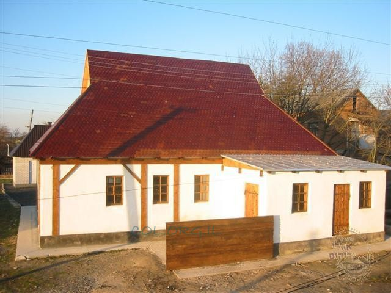

Shabbos Preparations with the Baal Shem Tov
Presented for Shabbos Parshas VaEschanan, when we read the Aseres HaDibros .

It was a few years after the passing of the great light, the holy Rebbe, Reb Yisroel Baal Shem Tov. He was succeeded by his beloved student Reb Dovber, the Maggid of Mezritch.
Actually, after the Shiva, the disciples of the Baal Shem Tov, known as the chevraya kadisha, appointed Reb Tzvi, the son of the Baal Shem Tov, as their leader. They were happy when he agreed to accept this role.
Reb Tzvi was quiet, an introvert. He did not lead with delivering Divrei Torah and by receiving people. His silence was far more than his speech.
In that year of mourning, there were disciples and Chassidim who wondered where the Chassidic movement was headed. Could it be that because of that great loss the wellsprings would close? All knew that the Baal Shem Tov had led in an expansive manner, drawing his holy students after him, for he desired to expand the Chassidic movement and to bring its teachings to the scholars, those outstanding in Torah.
That first year was very difficult. Reb Tzvi was a great tzaddik but he did not have the wherewithal to lead the charge, to send out secret agents, great scholars on undercover missions to the Misnagdic fortresses, to shake the walls of their scholarship and draw them to the source of true light. It reached the point that in Misnagdic towns they rejoiced as they watched the structure of Chassidus, built by the Baal Shem Tov with such effort, beginning to totter.
An entire year passed. On Shavuos 5521, the talmidim of the chevraya kadisha were sitting at the holiday meal. At the head of the table sat their young leader, Reb Tzvi, wearing his father’s silk finery. There was silence in the air, as well as a pained feeling as all remembered the great loss of the previous year.
Suddenly, Reb Tzvi got up and proclaimed, “Today, my holy father came to me and said that the Heavenly retinue who were accustomed to be with him moved to his holy student, Rebbe Berenyu, son of R’ Avrohom. Therefore, said my father, give over the leadership to him in the presence of the entire chevraya kadisha, and he will sit in my place at the head of the table and wisely lead the Chassidim.”
Reb Tzvi turned toward R’ Dovber. Without another word, he removed his outer cloak, draped it over him and wished him, “Mazal Tov.” Then and there, Reb Dovber’s face became inflamed, and with great awe he sat in the seat of leadership as the new leader of the Chassidim.
At that awesome event, the Maggid began to expound on the verse [in the Maaseh Merkava of Yechezkel that is read on Shavuos], “U’Mareihem U’Maaseihem.”
The Maggid of Mezritch very quickly displayed outstanding leadership skills. Just three months passed since he was appointed and the situation had reversed itself. Once again, all of the Chassidic centers in Vohlyn and Podolia, and in Lithuania and Poland, were fortified. He sent his top students, men of great spiritual power, to spread chassidus to the Misnagdic strongholds.
PART II
A few years passed since the Maggid took over the leadership. He had already firmly established his leadership and had expanded the Chassidic movement many times over despite the intense opposition. His name was known far and wide and mentioned with great reverence.
His leadership success was a wonder to the tzaddik Rabbi Yaakov Yosef Katz of Polnoye, author of the Toldos, who was a great student of the Baal Shem Tov and a friend of the Maggid of Mezritch. Both had spent time together in the presence of the Baal Shem Tov in Mezhibuzh and both had received Torah from him.
Indeed, upon the passing of the Baal Shem Tov, the Maggid of Mezritch and Rabbi Yaakov Yosef had both risen to leadership roles in the Chassidic movement with the Maggid appointed as the successor of the Baal Shem Tov and head of the Chassidic movement, while Rabbi Yaakov Yosef took the lead in disseminating the teachings of the movement.
Despite their friendship, R’ Yaakov Yosef wondered what special powers the Maggid of Mezritch, who learned Torah from the Besht for only five years, was endowed with, while he himself was one of the first students and had spent many years with the Besht. Far be it from us lowly people to speak of such giants in those terms, but this is what is told of the history of that time, that this is what R’ Yaakov Yosef was thinking.
R’ Yaakov Yosef wanted to know how R’ Dovber merited to be the successor and he had not. He left for Mezritch to the court and beis midrash of his good friend, to see for himself why this had occurred.
It is not known whether he sent word of his upcoming arrival or whether the Maggid knew with Ruach HaKodesh. Whichever it was, the Maggid immediately took steps to accord him the proper honor and instructed that preparations for a great feast should be made for the honored guest. And when the time came, he left his house to welcome the illustrious guest while wearing Shabbos clothes and carrying lit candles.
The students of the Maggid saw what honor he was giving to the guest and they followed his lead, and when the distinguished guest arrived in Mezritch, they received him with great honor. This was to the extent that they formed two rows, an honor guard, with the Maggid and the guest walking in the center from the road into the Maggid’s house. When the two of them entered his room, they closeted themselves for a private talk.
The talmidim wanted to hear what they were saying, for even the mundane conversation of Torah scholars is worthy of study; all the more so, the conversation of these two great students of the Baal Shem Tov.
From the cracks they listened closely. After pleasantries and Divrei Torah, the Toldos asked his friend the Maggid how he merited to be crowned by Heaven as the leader. “Did you get more from our master than we did? I am certain that you possess great hidden secrets and therefore I ask that you not hide this from me,” requested the Toldos beseechingly of the Maggid.
The countenance of the Maggid began to glow, and he asked softly, “Did you pay close attention to all of the ways of our master, the Baal Shem Tov?”
“It seems to me that my eyes missed nothing,” responded R’ Yaakov Yosef, after having considered the question thoughtfully.
“Do you know why two towels hung on our master’s wall? And why only one was sewn on both sides?”
R’ Yaakov Yosef admitted that he had not noticed, and asked to know the meaning of this practice.
A gleam of light came into the eyes of the Maggid, and it seemed he was going back in time to that distant Friday and was reliving the thrilling experience that had branded itself into his soul.
PART III
The Maggid then began telling his friend that he always noticed the towels hanging in the Besht’s room. He knew, good and well, that the room of the Baal Shem Tov was not just any room; every item in the room, even if a common object, had deep significance.
Therefore, he wanted to know about the towels, what their purpose was. He found out when his master used them and concluded that it was during those lofty hours when the Baal Shem Tov was in his room after immersing Erev Shabbos. The chevraya kadisha knew, as did his attendant, that the Baal Shem Tov had instructed that nobody enter his room during those times.
He would remain locked in his room, absorbed in his lofty thoughts until the time for Kabbalas Shabbos. Not only was the door locked, but the tzaddik even made sure that the windows were shuttered, removing the possibility of anyone looking at what he was doing during this time of the conclusion of the Six Days of Creation, when all the worlds rise up to their source, which is an especially elevated time.
Despite all this, the desire to know the secret of the towels plagued the Maggid for many days until he decided to do something daring and dangerous. He decided to sneak into the room before his master.
It was a Friday, and the Baal Shem Tov had gone to immerse in honor of the Shabbos queen. His attendant was busy cleaning and arranging the room. The student, Reb Berenyu, stood at a distance, waiting. When the attendant finished his work and left to throw out the garbage, he left the master’s room open for a few short minutes. That was what the Maggid was waiting for. He entered the room and hid under the bed.
The attendant soon returned. Without knowing what had just happened, he finished his work and closed the door from the outside.
When the Baal Shem Tov returned from immersing, he entered his room and locked the door as he always did. He immediately went over to where the towels were hung. He reached out to the towel that was sewn on both sides, but immediately pulled back. He looked around as though searching for something, but when he didn’t find it he reached again for the towel. Again, his Ruach HaKodesh told him someone else was with him.
“Who is in my room?” he called out.
“When I saw that I would not be successful in my mission and there is nothing hidden from our master, I had no choice but to come out of my hiding place in great humility,” said the Maggid to his friend. “I begged him to forgive me for entering his room without permission and turned to go.”
“Now it is no longer possible to go,” said the Baal Shem Tov. “The room is already prepared and arranged, and the door cannot be opened.”
A profound silence fell over the room.
Then the Baal Shem Tov broke the silence and said to his dear student, “But tell me, did you already immerse in the mikva?” When R’ Berenyu said he did, the Baal Shem Tov leaned over and whispered a certain mystical divine intention in his ear on which he was supposed to focus his thoughts. He also instructed him to grasp the sewn towel together with him, “And together, we rose up to the Heavenly chambers. More than that I cannot reveal,” concluded the Maggid.
R’ Yaakov Yosef looked at the shining countenance of the Maggid and understood that his friend’s spiritual level had risen to extremely exalted heights, even back when he was still basking in the presence of the Baal Shem Tov.
R’ Yaakov Yosef got the message from hearing the story and was satisfied with this answer. No longer did he have any thoughts about the greatness and leadership of the Mezritcher Maggid.
When they finished talking, the two tzaddikim left the room and went to sit at the table that was set for a feast. They sat together at the head of the table while the students of the Maggid sat to their right and left. At the end of the table, sitting opposite them, was the youngest student, Zalmanyu the Litvak, later known as the Alter Rebbe.
In the middle of the meal, the Toldos suddenly noticed a change in the seating arrangement.
“Why did the Litvak suddenly give his place to a man with a blond beard?” wondered the Toldos.
“Don’t you recognize him?” said the Maggid in surprise. “That is the Arizal who would come to us whenever our master, the Baal Shem Tov, expounded on the teachings of Chassidus.”
Thus, the Toldos was given yet another indication of the greatness of the Maggid, as well as the greatness of the Alter Rebbe.
Menachem Ziegelboim. "Shabbos Preparations with the Baal Shem Tov." Beis Moshiach, no. 1129 (August 1, 2018).